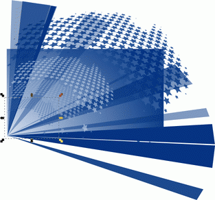

Abstract

The primary goal of the course is to expose students to the practice of programming at a reasonably large scale. While the principal way of learning to develop software is to develop software, this course teaches how the program design principles of the prerequisite courses scale to a large code base. Indeed, without relying on such fundamental design principles, a large code base may quickly become prohibitively complex and incomprehensible.
In addition to technical skills, the courses also continues the development of collaboration-communication skills from the prerequisite programming courses. Going beyond pair programming, the course introduces panel-based code reviews. Students present their solutions to their peers (in class), and student panels act as reviewers. Both presenting code and understanding such presentations are critical skills for the modern software developer.
Prerequisite
This course relies on four prerequisites: Fundamentals I, Fundamentals II, Logic in Computer Science, and Object-Oriented Design. Knowledge of Theory of Computation will be helpful. The ideal student has completed his or her first co-cop and/or has invested time in some programming language independent of courses at Northeastern.
For a detailed discussion of the role of Software Development in the undergraduate programming curriculum, you may wish to visit Felleisen’s personal web site and look for the Thought entitled "Developing Developers." To get there, go to Felleisen’s Northeastern CCIS page and follow the link on the bottom right after reading the warning.